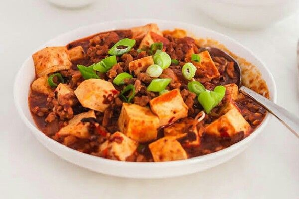

Mapo Tofu

Bahan isian ayam:
- 2 buah tahu sutra yang sudah dipotong dadu
- 100 gram daging giling
- 1 cm jahe yang sudah dicincang halus
- 1 sdt kecap inggris
- 1 sdm kecap manis
- 4 siung bawang putih yang sudah dicincang
- 1 sdm saus sambal
- 1 sdm saus tomat
- 1 sdt garam
- 1/2 sdt gula pasir
- 2 batang daun bawang yang sudah diiris
- 150 ml kaldu sapi
- 1 sdt tepung sagu
- 1 sdt air
- 2 sdt minyak wijen
- 1/2 sdt lada
- 3 sdm minyak
Cara Membuat:
- Campurkan daging giling bersama kecap manis dan kecap inggris kemudian diamkan selama 20 menit
- Panaskan minyak kemudian tumis jahe dan bawang putih hingga harum
- Kemudian masak daging giling hingga berubah warna dan harum
- Tambahkan tahu sutra kemudian aduk hingga rata
- Tuangkan kaldu sapi dan masak hingga mendidih
- Campurkan tepung sagu dengan air hingga larut
- Setelah itu masukan larutan tepung sagu ke dalam masakan
- Tambahkan garam, lada, gula, saus sambal, dan saus tomat, masak hingga kental dan meletup
- Masukan minyak wijen dan irisan daun bawang, aduk hingga rata
- Mapo tofu siap untuk disajikan
Back to main page